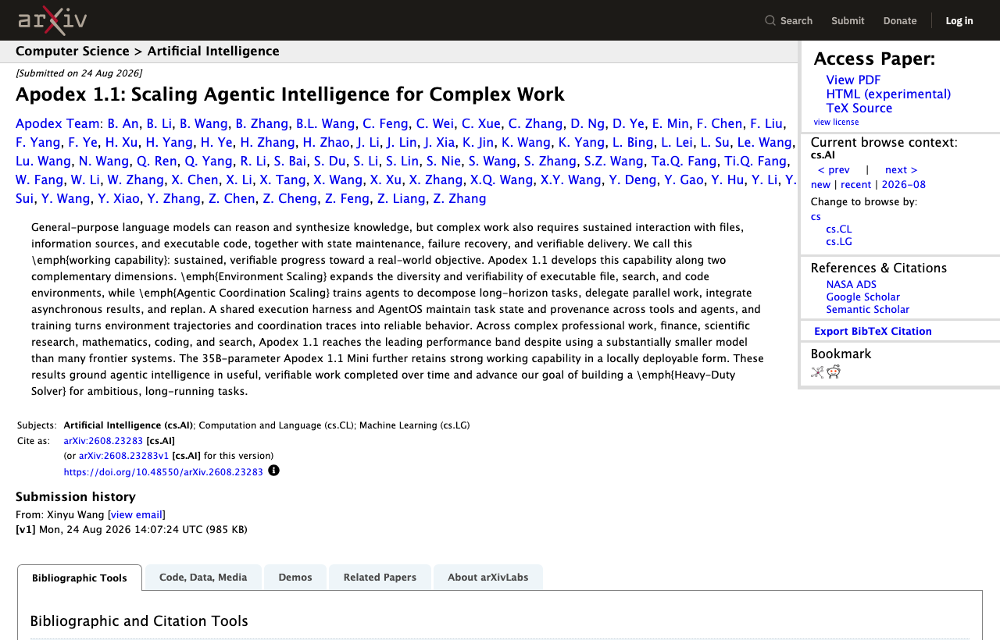

09 arXiv 게시일 2026.08.24
Apodex 1.1, 장기 업무형 에이전트 성능 높였다

이 연구는 AI가 긴 업무를 실제로 끝내는 능력에 초점을 맞췄다. 복잡한 일은 질문에 답하는 것만으로 끝나지 않는다. 파일을 다루고, 검색하고, 코드를 실행하고, 실패 뒤에 다시 계획을 세워야 한다. Apodex 1.1은 이런 작업 능력을 두 축으로 키웠다고 설명한다.
방법과 결과
핵심 방법은 두 가지다. 하나는 실행 가능한 환경을 넓혀 에이전트가 실제 도구를 다루게 하는 일이다. 다른 하나는 여러 에이전트가 긴 작업을 나눠 맡고 다시 합치는 절차를 학습시키는 일이다.
연구진은 작업 상태와 결과 이력을 AgentOS로 관리했다. 이 구조는 중간 실패가 나와도 이어서 복구할 수 있게 설계됐다. 학습 데이터는 단순한 정답 쌍이 아니다. 환경에서 남은 실행 경로와 에이전트 사이의 조정 기록도 함께 썼다.
결과 설명은 정성적이다. 연구진은 여러 전문 영역에서 상위권 성능대를 기록했다고 밝혔다. 다만 발췌문에는 수치, 독립 평가 여부, 저자가 인정한 한계가 충분히 실리지 않았다. 원 논문 본문을 확인해야 실제 격차와 조건을 판단할 수 있다.
업계의 움직임
아직 공개된 반응은 확인되지 않았다.
시사점과 체크포인트
우리 회사가 볼 대목은 모델 크기보다 운영 구조다. 긴 업무 자동화는 답변 성능만으로 풀리지 않는다. 파일 처리, 검색 권한, 코드 실행 범위, 상태 저장 방식이 함께 설계돼야 한다.
검토할 항목은 뚜렷하다.
- 어떤 업무를 장기 과제로 볼지 정한다. 예를 들면 장애 분석, 규정 점검, 리포트 초안 작성이다.
- 중간 상태를 어디에 저장할지 정한다. 재시도와 감사 추적이 가능해야 한다.
- 여러 에이전트가 병렬로 일할 때 승인 지점을 넣는다. 금융 업무는 자동 합의보다 검토 절차가 더 중요할 수 있다.
- 로컬 배포가 필요하면 350억 매개변수 모델의 실제 인프라 요구를 따져본다.
미확인 정보도 많다. 성능 수치, 비교 기준, 비용, 보안 통제 방식은 발췌문에 없다. 도입 검토 전에는 논문 본문과 코드 공개 범위부터 확인할 필요가 있다.
주요 용어
원문 정보
제목: Apodex 1.1: Scaling Agentic Intelligence for Complex Work
게시일: 2026.08.24
출처 URL: https://arxiv.org/abs/2608.23283